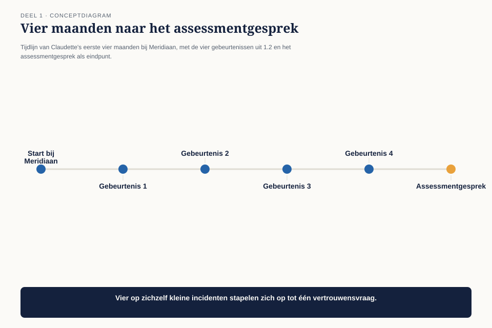
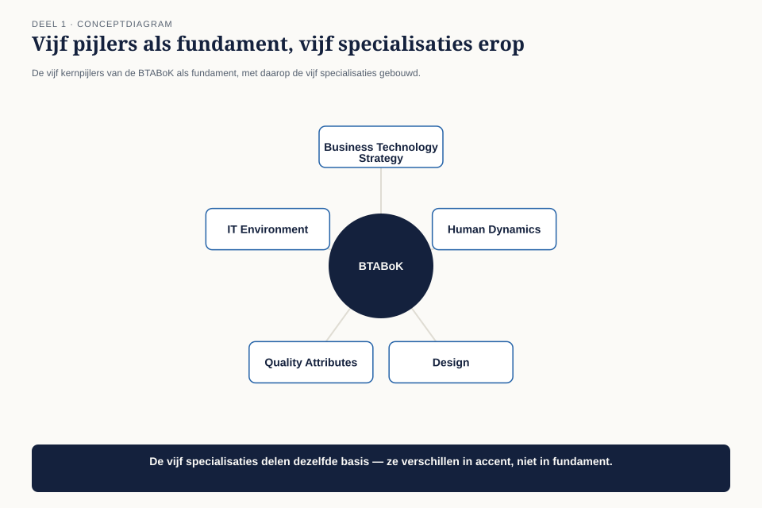
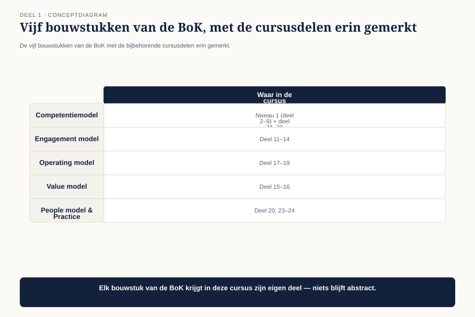

Deel 1 — Het beroep
Slidedeck · Ductus-cursus BTABoK · Niveau 1 · deel 1 van 30 · 41 slides
Slide 1 — Titel: Het beroep
Deel 1 — BTABoK niveau 1
Ductus
Slide 2 — Agenda: Vanmorgen
- Meridiaan en Claudette — zeven observaties
- Wat is architectuur volgens Iasa?
- Beroep of rol?
- Vijf pijlers, vijf specialisaties
- De opbouw van de BoK
- Ethiek en principes
- Waar de BTABoK staat tussen wat je al kent
- Het certificeringspad
Slide 3 — Sectie: 1. De casus
Slide 4 — Bullets: Claudette Vermeer
- 33, zeven jaar softwareleverancier, laatste drie als lead developer
- Vier maanden Solution Architect bij Meridiaan Pensioen
- Functieprofiel: drie A4, waarvan anderhalf technologie
- Rest: “verbindt business en IT”, “bewaakt de architectuurkaders”
Slide 5 — Figuur: Vier maanden
Onderschrift: van indiensttreding tot assessmentgesprek

Slide 6 — Bullets: Wat er gebeurde
- Portefeuilleraad — zit erbij, wordt niets gevraagd; bezwaar niet in de notulen
- 21 pagina’s over de integratielaag — drie reacties, alle drie van ontwikkelaars
- “De rem” — aldus de manager Klantbediening. Niet kwaad bedoeld
- “Wat levert dat op?” — geen antwoord voorbij “minder risico”
Slide 7 — Tabel: De zeven observaties van de CIO
| O1 | Niemand kan uitleggen waarvoor Claudette aan tafel zit |
|---|---|
| O2 | Kent het verdienmodel van Meridiaan niet |
| O3 | Elk voorstel strandt op kosten en baten |
| O4 | Wordt ervaren als obstakel |
| O5 | Documenten worden niet gelezen |
| O6 | Geen spoor van waarom besluiten genomen zijn |
| O7 | Kwaliteitseisen komen pas in productie boven |
Slide 8 — Statement: Zes van de zeven gaan niet over techniek
Slide 9 — Sectie: 2. Wat is architectuur?
Slide 10 — Citaat: De kunst en de wetenschap van het ontwerpen en leveren van **waardevolle** techn
De kunst en de wetenschap van het ontwerpen en leveren van waardevolle technologiestrategie
— Iasa Global
Slide 11 — Bullets: Twee woorden dragen die zin
- Waardevolle — architectuur gaat over waardelevering, niet systeemlevering
- Een systeem dat werkt maar niets oplevert: werk niet gedaan
- Strategie — je werkt waar keuzes nog open zijn
- Kom je pas als de keuze vastligt, dan ben je toetser
Slide 12 — Bullets: Wat een architect níet is
- Geen verzameling technologieën — tools, stijlen en platformen zijn geen competenties
- Geen functietitel — je wordt herkend aan wat je weet en doet
- Geen manager — boven een bepaald schaalniveau houd je het proactieve werk niet vast
Slide 13 — Sectie: 3. Beroep, geen rol
Slide 14 — Bullets: Het verschil
- Functie: je werkgever bepaalt of je bekwaam bent
- Professie: de beroepsgroep bepaalt dat
- Een arts wordt geen arts doordat het ziekenhuis dat vindt
- De maatstaf is extern, gedeeld en draagbaar
Slide 15 — Bullets: Vier overtuigingen uit het manifest
- Architectuur is een professie met een eigen body of knowledge
- Kennis verwerf je door meesterschap: opleiding én praktijk
- Meesterschap toon je aan met examen én peer review
- Een professional is ethisch én juridisch verantwoordelijk voor de uitkomst
Slide 16 — Opdracht: Opdracht 1 — Jouw ene zin
15 minuten, individueel
Eén zin, max. 40 woorden:
waarde in plaats van activiteiten · geen technologie · navertelbaar door je directie
Daarna: drie dingen die je deed die er niet onder vallen
Slide 17 — Sectie: 4. Vijf pijlers, vijf specialisaties
Slide 18 — Figuur: Het competentiemodel

Slide 19 — Tabel: De vijf kernpijlers
| Pijler | # |
|---|---|
| Business Technology Strategy | 9 |
| Human Dynamics | 7 |
| Design | 9 |
| IT Environment | 10 |
| Quality Attributes | 7 |
Slide 20 — Bullets: Vijf specialisaties
- Business · Information · Infrastructure · Software · Solution
- Gedefinieerd door extra competenties — niet door rol, titel of afdeling
- Je bent geen informatiearchitect omdat je bij het datateam zit
- Niveau 2 van deze cursus: Solution volledig, de andere vier als delta
Slide 21 — Statement: Human Dynamics staat op gelijke voet met Design
Slide 22 — Opdracht: Opdracht 3 — Observaties naar pijlers
20 minuten, tweetallen
Wijs O1 t/m O7 toe aan een primaire en een secundaire pijler
Tel daarna de primaire toewijzingen. Welke pijler wint?
Slide 23 — Sectie: 5. De opbouw van de BoK
Slide 24 — Figuur: Vijf bouwstukken

Slide 25 — Bullets: Waar we ze tegenkomen
- Competentiemodel — deel 2-9, 21, 23
- Engagement model — deel 11-14
- Value model — deel 15-16
- Operating model — deel 17-19
- People model & practice — deel 20, 23-24
- Plus: topic areas (deel 25) en 75+ canvases (doorlopend)
Slide 26 — Statement: Minimum viable architecture
De kleinste documentatieset die het besluit draagt
Slide 27 — Sectie: 6. Ethiek en principes
Slide 28 — Bullets: Twee verschillende dingen
- Ethiek — leidende waarden voor klant en markt → naar buiten gericht
- Principes — interne regels voor hoe je tot oplossingen komt → naar binnen gericht
- Aanleiding: producten haastig naar de markt, waarborgen later
- De architect ziet het vooraf aankomen. Dat schept een verplichting
Slide 29 — Tabel: Code of Standards — vier canons
| Canon | Jegens | Kern |
|---|---|---|
| I | het vak | bekwaam blijven, onafhankelijk oordelen, gevolgen wegen |
| II | de opdrachtgever | niet misleiden, geen verborgen belangen, vertrouwelijkheid |
| III | de beroepsgroep | geen valse claims, niet tekenen zonder zeggenschap |
| IV | collega’s | begeleiden en krediet geven |
Slide 30 — Citaat: Eerst wat goed is voor de klant. Dan wat goed is voor het bedrijf als geheel. Te
Eerst wat goed is voor de klant. Dan wat goed is voor het bedrijf als geheel. Ten slotte wat goed is voor onze eigen werkgroep.
— architecten bij een vliegtuigbouwer, uit de BTABoK
Slide 31 — Bullets: Vier professionele tenets
- Just-in-time architecture — beslis op het laatst verantwoorde moment
- Bouw dingen, bestuur geen dingen — architectuur is scheppend, geen toezicht
- Versterk partnerrollen — geen concurrentie met andere professionals
- De klant is nooit intern — anders blijf je orderopnemer
Slide 32 — Opdracht: Opdracht 6 — De vertraagde melding
30 minuten, groepen van vier
Welke canons raken dit? · Wat moet, mag en mag niet? · Maakt anciënniteit verschil?
Schrijf de melding — max. 150 woorden
Slide 33 — Sectie: 7. Waar de BTABoK staat
Slide 34 — Tabel: Vijf instrumenten, vijf vragen
| Beantwoordt | Eenheid | |
|---|---|---|
| TOGAF | hoe richt ik het proces in | organisatie |
| ArchiMate | hoe leg ik het vast | model |
| BIZBOK | hoe beschrijf ik de business | onderneming |
| iSAQB | hoe ontwerp ik een systeem | systeem |
| BTABoK | wat moet de architect kunnen | de persoon |
Slide 35 — Bullets: Geen concurrent
- De BoK vervangt frameworks niet — hij maakt ze werkbaar
- Toolneutraal per principe
- Waar het wél botst: “bestuur geen dingen” versus het architectuurgremium
- Dat meningsverschil lossen we niet op. We werken het uit in deel 19
Slide 36 — Sectie: 8. Het certificeringspad
Slide 37 — Tabel: De CITA-trap
| Toetsvorm | Ervaring | |
|---|---|---|
| CITA-F | kennisexamen | instroom |
| CITA-A | scenario-examen, één specialisatie | 3-5 jaar |
| CITA-S | board van een uur + dossier | 5+ jaar, diepte |
| CITA-P | boardinterview + uitgebreid dossier | 8-10 jaar, breedte |
| CITA-D | hoogste board | loopbaan + bijdrage |
Slide 38 — Statement: Vanaf CITA-S win je met bewijs, niet met kennis
Slide 39 — Bullets: Drie draden door dertig delen
- Titel is geen competentie
- Waarde is een bewering die je moet kunnen dragen
- Minimum viable architecture
Slide 40 — Bullets: O1 gesloten
- De fout in het profiel: technologie is geen competentie → het beschrijft een ontwikkelaar
- De fout in de verwachting: geen niveau per pijler, geen specialisatie benoemd
- De ontbrekende zin: technologiestrategie omzetten in aantoonbare waarde, en de besluiten daarover navolgbaar maken
Slide 41 — Titel: Volgende keer
Deel 2 — Business Technology Strategy I
Claudette moet uitleggen hoe Meridiaan geld verdient. Dat wordt O2.